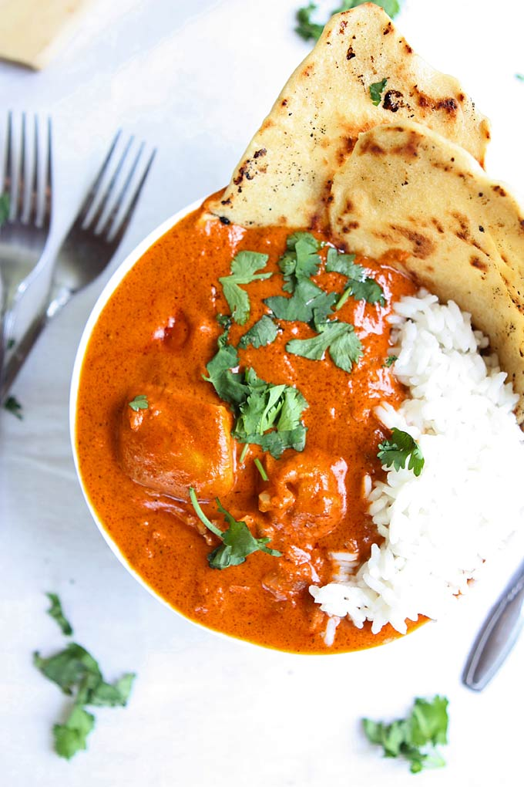

Butter Chicken

Description
The roots of butter chicken are only as recent as the 1950s, when it was developed accidentally
by the chef of famous restaurant Moti Mahal in Delhi, the capital of India.
Butter chicken is typically prepared with marinated chicken that's first grilled and then served
in a rich gravy (a.k.a. curry) made with tomato, butter, and a special spice blend as a base.
Ingredients
- 6 tbsp butter
- 2 lbs chicken, 1" chunks
- 1 yellow onion, diced
- 3 cloves garlic, minced
- 1 tbsp garam masala
- 1 tbsp ginger, grated
- 1 tsp chili powder
- 1 tsp cumin powder
- 0.5 tsp cayenne pepper
- 1.5 cups tomato sauce
- 2 cups cream
- salt and pepper
- lime and cilantro
- naan and rice
Steps
-
Using 2 Tbsp of butter in a large skillet over medium-high heat, brown the pieces of the chicken so each side is browned.
They do not need to be fully cooked all the way through. Work in batches, and set aside when you’re done.
-
Melt another 2 Tbsp of butter in the pan over medium heat. Add the onion, and cook until beginning to soften — about three minutes.
Add the garlic, garam masala, ginger, chili powder, cumin, and cayenne. Stir to combine, and cook for about 45 seconds
before adding the tomato sauce.
-
Bring the mixture to a simmer and let cook for five minutes before adding the cream. Bring the mixture back to a simmer,
add the browned chicken, and let simmer for 10-15 minutes. Keep the heat low here — not a rolling boil.
-
Stir in the remaining 2 Tbsp of butter, and season with salt and pepper, to taste.
-
Serve garnished with lime and cilantro, alongside rice and naan.